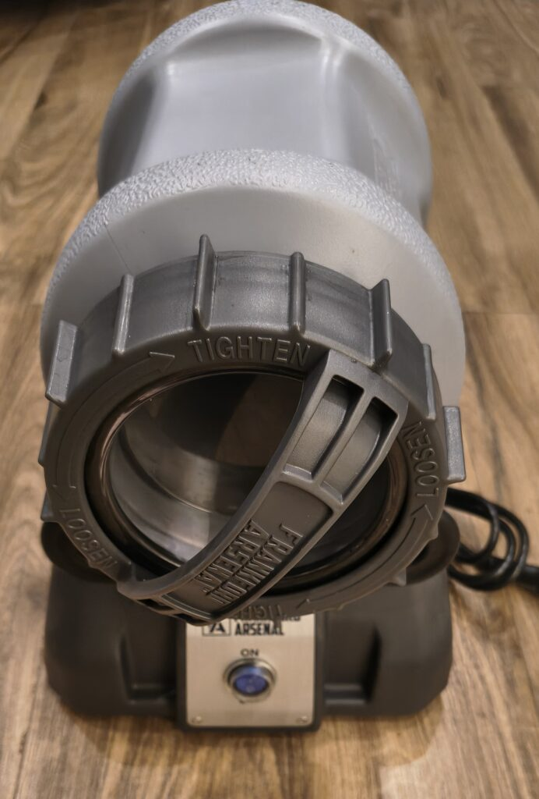
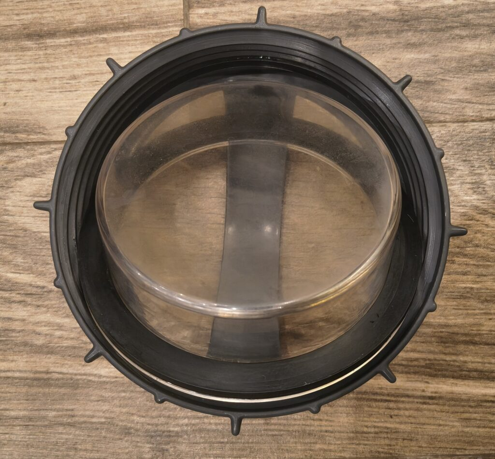
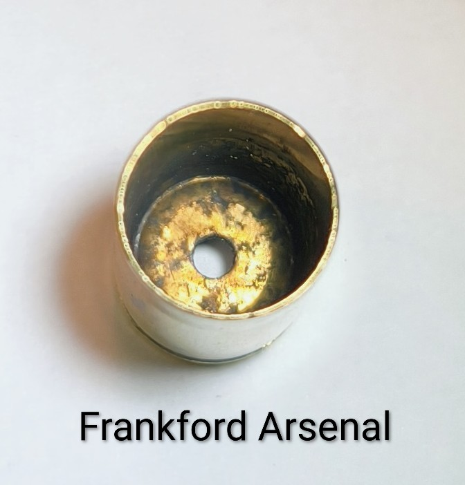
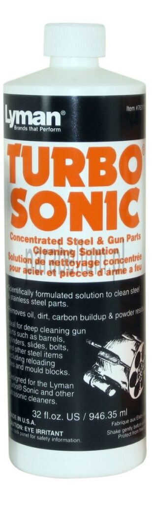
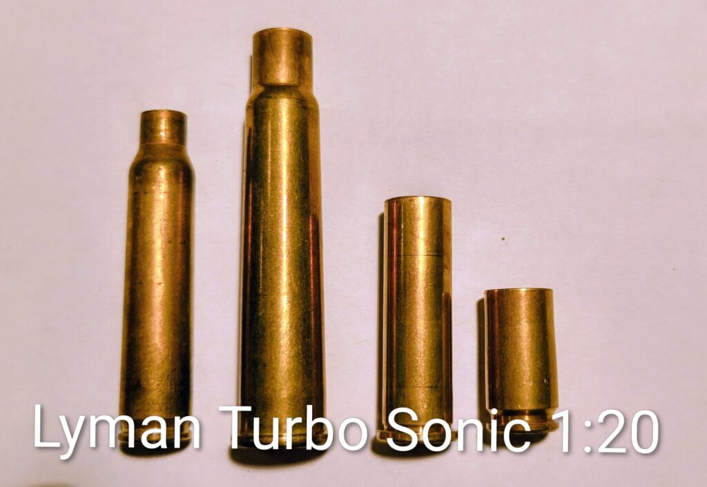
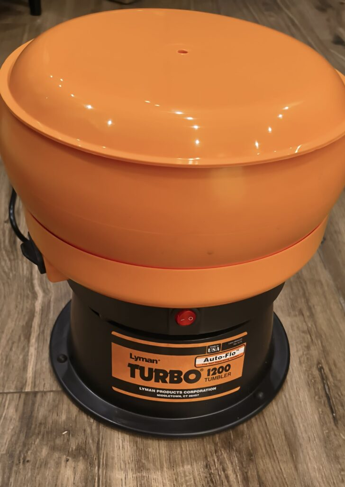
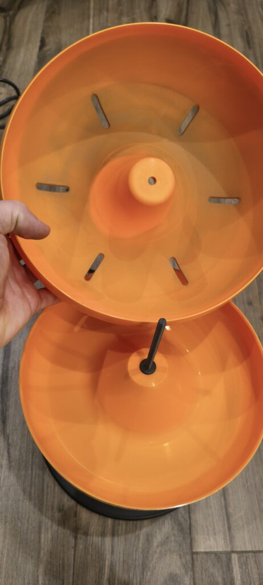
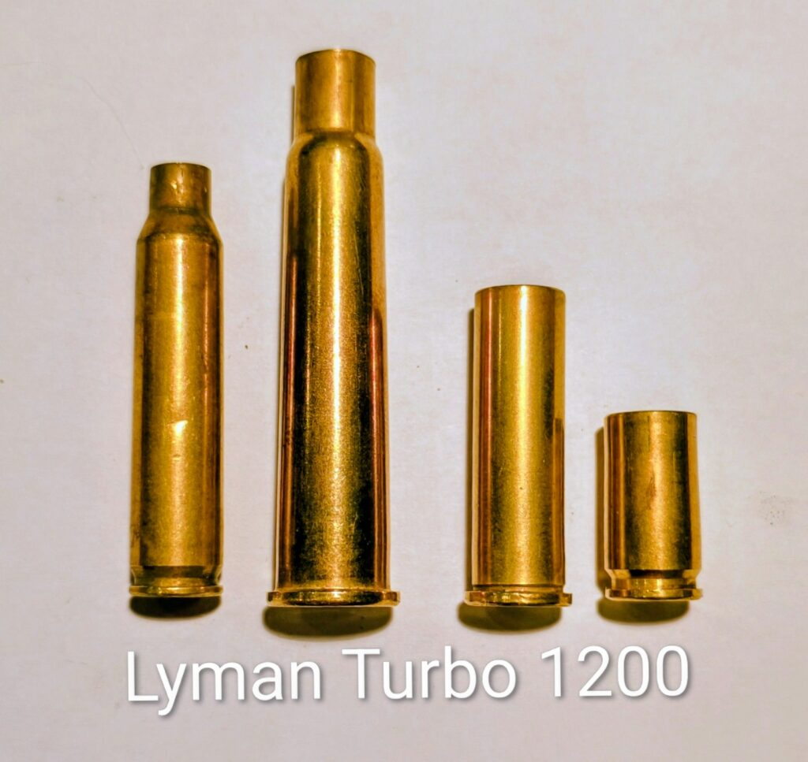
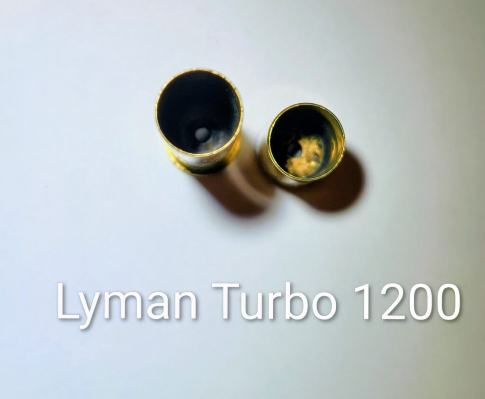

Przygotowanie łusek część I – czyszczenie
2025-12-21
Jednym z pierwszych etapów elaboracji amunicji jest przygotowanie łusek do ponownego użycia. Choć w sklepach z komponentami bez problemu znajdziemy nowe łuski, znaczna część strzelców będzie chciała wykorzystać odstrzelone przez siebie albo pozyskane używane łuski. Jest to opcja zdecydowanie bardziej ekonomiczna, a w przypadku elaboracji amunicji karabinowej do repetierów również poprawiająca powtarzalność strzałów – w czasie wystrzału łuska rozpręża się i dopasowuje się do komory danego karabinu (tzw. formowanie ogniowe, fire-forming).
Łuska po odstrzeleniu jest jednak brudna – okopcona, a w przypadku broni samopowtarzalnej często zapiaszczona czy ubłocona. Przed ponownym użyciem konieczne jest zatem usunięcie zabrudzeń. Nie tylko walory estetyczne mają tu znaczenie, choć oczywiście reelaborowana amunicja, która zostawia nam w plecaku, komorze nabojowej i palcach wspomnienia po strzelaniu z ostatniego kwartału nie jest niczyim szczytem marzeń. Istotniejsze są jednak kwestie bezpieczeństwa – utytłana łuska będzie maskowała ewentualne uszkodzenia, pęknięcia, wybrzuszenia, rysy wróżące pozostanie denka łuski w naszych palcach. Do tego nagar w środku łuski, szczególnie w kanale ogniowym może w końcu doprowadzić do istotnych wahnięć w osiąganych przez pocisk prędkościach, a w skrajnych sytuacjach – może doprowadzić do awarii, jeżeli kanał ogniowy zostanie całkowicie zatkany nagarem.
To czy czyszczenie łuski będzie pierwszą czynnością, czy którąś z kolei, będzie zależało od rodzaju amunicji i preferencji elaboranta. Łuski z repetiera czy rewolweru, które nie wylądowały w błocie i są jedynie lekko okopcone, można w pierwszej kolejności sformatować (szczególnie jeśli formatujemy tylko szyjkę łuski) i ewentualnie skrócić. Resztki nagaru nie powinny nadmiernie zużyć naszej matrycy. Jeśli mamy jednak do czynienia z łuskami mocno zabrudzonymi, zbieranymi na otwartej osi, z resztkami piachu, ziemi albo innych bogactw naturalnych, najlepiej łuski wyczyścić przed formatowaniem – matryca odwdzięczy nam się dłuższą żywotnością.
Sporo osób zastanawia się, który ze sposobów czyszczenia łusek będzie najskuteczniejszy. Na to pytanie nie ma uniwersalnej odpowiedzi, ale dzięki uprzejmości sklepu Parabellum mogliśmy przetestować trzy podstawowe urządzenia: mokry tumbler, suchy tumbler wibracyjny i myjka ultradźwiękowa. Do testów wybrałem różne rodzaje łusek, ponieważ inaczej zachowywać będzie się łuska do .223 Remington (niewielka, butelkowa, z niewielkim prześwitem szyjki), a inaczej łuska do kalibru 9mm Parabellum (krótka, prosta). Efekty możecie ocenić sami.
W pierwszej kolejności zaznaczę, że na co dzień używam chińskiego tumblera obrotowego z wkładem z nierdzewnych satelitek. Od Grzegorza z Parabellum dostaliśmy do testów tumbler Frankford Arsenal Rotary Case Tumbler Lite i po załadowaniu do pełna, a następnie odpaleniu, moja pierwsza myśl to: „a, to w ten sposób powinien działać tumbler!”. Tak, tak, bracia zza wielkiej wody mają sporo racji w swoim powiedzeniu „pay once, cry once”. O ile mój wynalazek jako-tako radzi sobie z łuskami pistoletowymi, o tyle załadowanie go do pełna (teoretyczna pojemność 3kg, realnie około połowy pojemności Frankforda) łuskami pełnoprawnych kalibrów karabinowych powoduje, że silnik po prostu przestaje dawać radę. Do tego pojemnik z pseudopoliwęglanu wymieniałem już trzy razy, bo albo przeciekał, albo pękał.

Tumbler Frankforda nie ma może wodostrysków w rodzaju sterowanie czasowe, kierunek obrotów czy ich prędkość, natomiast doładowany do pełna, zalany wodą o temperaturze 60 stopni Celsjusza w półtorej godziny przemielił 1000 sztuk łusek .223, brudnych jak sztygar po skończonej szychcie na kopalni. Pojemnik został wykonany z grubego plastiku, podobnie jak wygodna nakrętka z uchwytem. Solidna, przemysłowa, szeroka uszczelka gwarantuje lata spokoju, trzeba jedynie pamiętać o tym, by między myciami wyczyścić powierzchnię pod nią – dostaje się tam sporo brudu, który może powodować nieszczelności. Mój niepokój budzi jedynie przezroczysta część nakrętki, służąca jako wizjer. Niebezpiecznie przypomina mi ścianki mojego chińskiego wynalazku i dokładnie tak samo matowi się od wkładu stalowego. Po 1200 sztuk umytych łusek (cztery serie po 30 minut) jest już nieco mleczna, co w niczym nie przeszkadza, ale powstaje pytanie co do jej trwałości. Nie spotkałem się jednak z żadnymi skargami na ten temat, ani na polskich, ani na amerykańskich forach, zatem problem może być teoretyczny.

Mycie łusek w tumblerze jest proste i tanie. Wrzucacie łuski do środka, zalewacie wodą, dodajecie wkład stalowy i chemię, zakręcacie, a po pół godziny dostajecie czyste i błyszczące łuski. Co więcej, niekoniecznie musicie używać specjalnych środków, jeżeli preferujecie rozwiązanie bardziej ekonomiczne, a łuski będą służyć do strzelań dynamicznych czy rekreacyjnych, gdzie nie jest konieczne zachowanie wysokiej precyzji i powtarzalności. W takim przypadku do tumblera wrzucacie tabletkę do zmywarki i dwie-trzy łyżki nabłyszczacza. Taki roztwór połączony z wkładem mechanicznym doczyści łuski z zewnątrz na wysoki połysk, gorzej będzie natomiast z gniazdem spłonki i wnętrzem łuski. Bez problemu poradził sobie i z łuskami karabinowymi (jako punkt referencyjny – łuska .223 odstrzelona z AR-15 z tłumikiem bez systemu flow) i z pistoletowymi.
Jeżeli zależy wam na tym, by łuska wyglądała jak nowa i z zewnątrz i wewnątrz, musicie sięgnąć po środki specjalistyczne albo uzupełnić procedurę mycia o dodatkową sesję w myjce ultradźwiękowej.

Zwróćcie uwagę, że obrotowy tumbler choć sam w sobie jest cichy, to wkład i łuski przemieszczające się w środku powodują całkiem spory hałas w trakcie mycia. Warto przeprowadzić ją w garażu albo innym pomieszczeniu z dala od domowników.
Po myciu łuski należy wysuszyć. Pozostawienie ich mokrych, żeby powoli wyschły w temperaturze pokojowej może skutkować zaciekami, które oczywiście nie mają żadnego wpływu na jakość amunicji, ale nie wyglądają zbyt estetycznie. Dodatkowo nie mamy wtedy pewności, że cała wilgoć została już usunięta, a wilgoć i proch nie idą w parze. Najczęściej stosowane są dwie metody domowe: suszarka do owoców/grzybów albo piekarnik. Suszarka ma ograniczoną pojemność, ale zapewnia niskie temperatury, więc nie pojawiają się przebarwienia, przy czym suszenie trwa długo. Piekarnik z obiegiem powietrza, ustawiony na 70-80 stopni przyspieszy suszenie. Osobiście nie polecam używać urządzeń, w których potem będziecie przygotowywać jedzenie – opary z chemii do mycia łusek i resztki osadów z gazów wylotowych nie są tym, co chcecie przyjmować do swojego organizmu. W internecie znajdziecie mnóstwo ofert używanych, przenośnych mini-piekarników, które można kupić czasem za kilkadziesiąt złotych.
A tak prezentują się wyniki mycia podwójnego – najpierw w tumblerze obrotowym, a następnie w myjce (po formatowaniu):
Podsumowanie:
+ wysoka jakość wykonania gwarantująca długie użytkowanie
+ pojemność (300-330 łusek .223)
+ łatwość użycia
+ niskie koszty użytkowania, dzięki możliwości używania środków domowych
+ doskonale myje łuski z zewnątrz, także te skrajnie brudne
–
nie domywa łusek od środka i w gnieździe spłonki
– konieczność suszenia łusek (dłuższa procedura mycia)
– usuwanie wkładu stalowego – warto nabyć separator
– cena za dość proste technicznie urządzenie
Dla kogo:
– osoby elaborujące duże ilości amunicji, często różnych kalibrów
– strzelcy dynamiczni
– osoby dla których kluczowe jest całkowite wyczyszczenie łuski – jako pierwszy etap
Na (ultra)głośno, ale dokładnie
Na potrzeby testu sprawiłem sobie myjkę ultradźwiękową o teoretycznej pojemności 3 litrów. W praktyce te 3 litry przypominają mniej więcej trzylitrowy pojemnik mojego chińskiego tumblera. Realnie mieści maksymalnie 100 łusek 6.5x55SE.
Parabellum zapewniło płyn do mycia łusek Lyman Turbo Sonic a jako alternatywę przygotowałem, według wytycznych internetowych mędrców, domowy płyn na bazie sody oczyszczonej, soli, kwasku cytrynowego i octu. Żeby nie trzymać was w niepewności, jeżeli myślicie o zakupie myjki ultradźwiękowej, nie obejdzie się bez chemii profesjonalnej. Domowy koncentrat, w przeciwieństwie do tumblera obrotowego, nie dał tu praktycznie żadnego zauważalnego efektu, poza tym, że brud na łuskach zrobił się mokry.

Inaczej zadziałał płyn Lymana, choć także nie we wszystkich przypadkach i nie w każdym stężeniu. Producent podaje jako zalecane stężenie od 1:40 do 1:20. Zadowalające efekty uzyskałem przy stężeniu 1:30 wzwyż i w temperaturze 60 stopni Celsjusza, przy 30 minutowych sesjach czyszczenia.
Łuski z repetierów i broni krótkiej niewątpliwie są czyste, choć nie uzyskują połysku właściwego mechanicznemu czyszczeniu, jak w przypadku tumblera. Jeżeli pominąć tę specyfikę wizualną, efekt jest więcej niż zadowalający – zdecydowana większość łusek ma czyste gniazdo spłonki i czyste wnętrze. Po testach przerzuciłem się na ten rodzaj mycia w przypadku łusek do elaboracji amunicji precyzyjnej – po pierwsze dlatego, że jednorazowo nie ma ich wiele (do 100 sztuk), po drugie pozwala to na eliminację zmiennej w postaci nagaru w łusce.
Gorzej myjka ultradźwiękowa poradziła sobie z łuskami .223 po katowaniu w AR-15 z tłumikiem. Brak mechanicznego polerowania jest już tu widoczny z uwagi na skrajne osmalenie łusek. W efekcie łuski są w większości czyste, ale bardzo matowe albo z zaciekami. Inaczej sprawa ma się w przypadku, gdy zastosujecie procedurę dwustopniową: najpierw mycie tumblerem, następnie format łuski i skracanie, potem mycie (po lubrykacji łusek w procesie formatowania) myjką ultradźwiękową – wówczas łuski będą wyglądać jak nowe.

Łuski oczywiście trzeba opłukać i wysuszyć, podobnie jak w tumblerze obrotowym, ale pomijamy etap usuwania wkładu mechanicznego, który jest uciążliwy (szczególnie jeśli robicie to ręcznie). Zdecydowanym minusem jest komfort pracy myjki i nie sądzę, żeby było tak tylko w przypadku chińskich urządzeń, bo ultradźwięki są po prostu wysoce irytujące i nie da się tego uniknąć, jeżeli sprzęt ma działać poprawnie. Myjki typowo przeznaczone do elaboracji, jak Lyman Turbo Sonic 2500 są lepiej wyciszone, ale i tak nie będą one pracować bezgłośnie. Mikrofon kamery nie wyłapuje do końca dźwięku, ale uwierzcie mi na słowo – wolelibyście słuchać cały dzień skrzypienia paznokciami po tablicy.
Podsumowanie:
+ łatwość użycia
+ doskonale myje łuski z zewnątrz i wewnątrz, w tym gniazdo spłonki
+ nie musicie usuwać wkładu mechanicznego
+ cena środków jest przystępna
+ można wykorzystać do czyszczenia elementów broni albo biżuterii
żony
– irytujący dźwięk urządzenia
– niezbyt duża liczba łusek w ramach jednego mycia
– nie radzi sobie z bardzo brudnymi łuskami
– łuski optycznie nie są tak błyszczące jak w przypadku innych rodzajów urządzeń
– konieczność suszenia łusek (dłuższa procedura mycia)
Dla kogo:
– osoby elaborujące amunicję precyzyjną
– strzelcy rewolwerowi, PRS, benchrest (karabiny typu repetier), myśliwi
– osoby dla których kluczowe jest całkowite wyczyszczenie łuski
Na sucho, ale szybko
Ostatnim sposobem wyczyszczenia łusek jest tumbler wibracyjny. Zasada działania jest trochę podobna do tumblera obrotowego, czyli mycie następuje poprzez mechaniczne tarcie o powierzchnię łusek. Różnica polega na sposobie wprowadzania wkładu w ruch – tu następuje to przez drgania mechanizmu urządzenia. Do testów udostępniono nam urządzenie Lyman Turbo Tumbler Auto-Flo 1200 z systemem autoopróżniania. Wkład stanowił granulat kukurydziany Lymana, choć dostępne są także np. orzechowe.

Urządzenie oprócz podstawy wibracyjnej składa się z dwóch misek, nakładanych na siebie. Dolna posiada otwór wylotowy, którym po skończonym “myciu” opróżniamy urządzenie z wkładu mechanicznego. Górna również dysponuje sitkiem, tak by wkład mógł swobodnie opuścić urządzenie.

Wkład mechaniczny wsypujemy do pojemnika górnego, dodajemy łuski… i tyle. Po około 30-40 minutach działania wyłączamy urządzenie, wysypujemy wkład, a łuski są gotowe do dalszej pracy. Efekty? Znowu różne: łuski broni powtarzalnej, które nie są nadmiernie zabrudzone, w procesu wychodzą błyszczące. Skatowane łuski z AR-15 są czyste, ale nie do końca błyszczące.


Tumbler rotacyjny ma tę samą wadę, co obrotowy – nie czyści dokładnie wnętrza łuski. Nie znajdziecie tam oczywiście resztek niedopalonego prochu, ale wkład nie jest w stanie wyczyścić wnętrza z nagaru. Co więcej, w ok. 10% łusek wystąpił problem blokowania się kawałka wkładu mechanicznego w gnieździe spłonki (co zdarza się też satelitkom albo pinom w tumblerze obrotowym) albo kanale ogniowym. Wkład jest jednak miękki, więc wypchnięcie go nie jest problematyczne, jak bywa czasem przy zaklinowanych satelitkach.
Niewątpliwą zaletą Lymana jest za to szybkość działania. Cały proces odbywa się na sucho, więc łuski nie muszą być suszone – co oznacza, że po pierwsze jest szybciej, po drugie nie pojawią się zacieki albo przebarwienia. System autoopróżniania jest genialny w swej prostocie, bo nie potrzebujecie dodatkowych urządzeń do separacji wkładu od łusek. Granulatu można używać wielokrotnie, choć w przeciwieństwie do stalowych satelitek nie będzie wieczny. Do tego urządzenie jest bardzo ciche – jeśli masz w domu małe dzieci, kota z ADHD albo psa z nerwicą, zdecydowanie to rozwiązanie sprawdzi się u ciebie.
Podsumowanie:
+ łatwość użycia
+ szybko!
+ system autoopróżniania wkładu
+ wkład jest naturalny i niedrogi
+ cichutki
+ łuski są dobrze doczyszczone z zewnątrz
– niezbyt duża liczba łusek w ramach jednego mycia
– nie doczyści łusek od środka i w gnieździe spłonki
– spore gabaryty
Dla kogo:
– osoby szukające szybkiego i jednostopniowego procesu czyszczenia
– strzelcy dla których wymogiem jest cisza w trakcie czyszczenia
– łuski pod dynamikę i rekreację – błyszczące z zewnątrz, wystarczająco czyste w środku
Wybierz mądrze, ale dla siebie
Jak widzisz, nie ma uniwersalnych rozwiązań, tak jak nie ma uniwersalnej broni “do wszystkiego”. Każda metoda czyszczenia ma swoje plusy i minusy, tak jak i grono zagorzałych zwolenników i przeciwników. Dlatego też warto przed zakupem rozważyć swój profil elaboracji i strzelectwa, aby dobrać rozwiązanie typowo pod siebie.
Dziękujemy sklepowi Parabellum za udostępnienie sprzętu i materiałów do testu. Na stronie sklepu znajdziecie zarówno tumblery mokre, suche, myjki ultradźwiękowe, jak i szeroki zakres materiałów do tych urządzeń.
ŁM